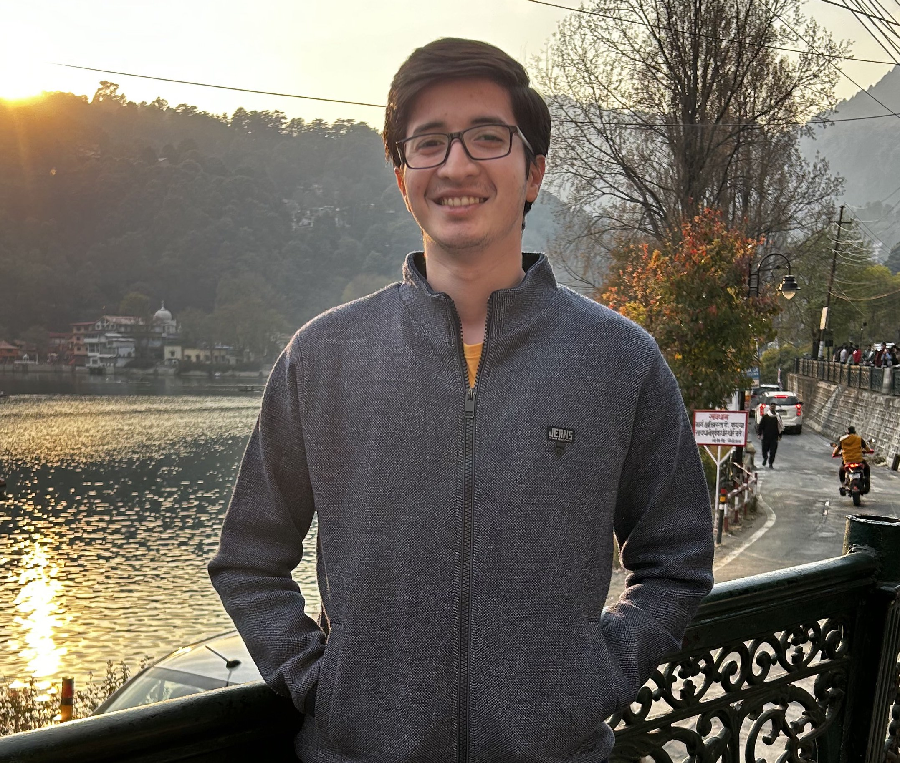
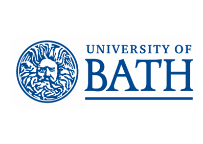
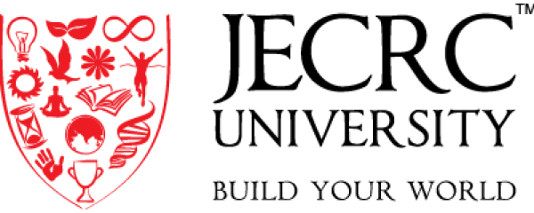

1. About Me

Tanay is recent Computer Science Graduate from India. He is a self-taught programmer and taught himself Machine learning from Andrew NG's excellent courses on Coursera.
In summer of 2020, amid the COVID lockdown in India, he started using Kaggle to enhance his skills and be more competitive in Data Science and Machine Learning. Currently, he is a Notebooks Grandmaster, Competitions Expert and Datasets Expert and he ranks among the top-100 in Notebooks category on Kaggle.
Tanay has worked at NVIDIA India as an Applied Research Intern in Machine Learning, working on the NVIDIA's RAPIDS stack. He has also recorded Instructional videos at NVIDIA on RAPIDS, PyTorch and Tensorflow for Internal training.
2. Education
I am currently an Incoming Masters Student (majoring in Data Science) at University of Bath, Somerset, United Kingdom.
Below is the list of formal degrees I have attended / currently attending / will be attending in the near future.
2.1 MSc in Data Science at University of Bath (UofBath)

Major: Data Science
Minor: N/A
Status: Ongoing, 2023-2024 (expected)
Final Grade: N/A
About: The University of Bath is a public research university in Bath, England. It received its royal charter in 1966, along with a number of other institutions following the Robbins Report. Like the University of Bristol and University of the West of England, Bath can trace its roots to the Merchant Venturers' Technical College, established in Bristol as a school in 1595 by the Society of Merchant Venturers. The university's main campus is located on Claverton Down, a site overlooking the UNESCO World Heritage city of Bath, and was purpose-built, constructed from 1964 in the modernist style of the time.
2.2 BTech in Computer Science at JECRC University

Major: Computer Science
Minor: Mathematics & Engineering
Status: Completed, 2018-2022
Final Grade: 8.76 / 10.0 (87.6%), First Division
About: JECRC University has its campus in Jaipur the capital city of Rajasthan and the famous tourist and business city in north-western India. The 32-acre JU campus combines unique classical architecture and thoughtful layout and landscaping to create a perfect learning ecosystem. The campus is located around the prime industrial and institutional hub of Jaipur and is well connected with all parts of the city. JECRC University is driven by the spirit of innovation-led research.
3. Experience
Below you can see all the places I have worked / interned at.
3.1 Graduate Teaching Assistant (NLP) - University of Bath
Type: Part-time
Duration: September 2023 - December 2023 (Winter Semester)
About:
- Worked as a Teaching Assistant in a Natural Language Processing unit (CM30320) for Undergraduates at the University of Bath, where I assisted students in understanding complex NLP concepts and related coursework
3.2 Machine Learning Engineer - Datatailr
Type: Full-time
Duration: April 2023 - September 2023 (6 months)
About:
- Wrote an Internal Documentation search application using locally deployed Large Language models for our clients to search for the documentation without passing the data to any 3rd party
- Built a code-search tool that enabled our developers to search their large code base internally using local LLMs.
- The Final project I took on was documenting the company's existing codebase (150,000 LOC) using LLMs. This required not just ML but also software development such as static code parsing, etc
3.3 Machine Learning Engineer - MetaDialog
Type: Full-time
Duration: September 2022 - March 2023 (6 months)
About:
- Improving the existing internal document Search system by utilizing Unsupervised Large Language Models.
- Used Microsoft's Deepspeed along with a combination of other speedups to carry out transformer inference using Larger than Memory models on large text datasets.
- Performed extensive prompt engineering in order to utilize Foundation models for a variety of different use cases in Zero-shot, One-shot and k-shot settings.
3.4 Applied Research Intern - NVIDIA
Type: Internship
Duration: June 2021 - September 2021 (3 months)
About:
- Worked on speeding up CPU-based Data Science and Machine Learning workflows to GPU-accelerated workflows using the RAPIDS package while preserving the performance.
- Improved Model training speed by ~100x while maintaining the performance as a result of using the RAPIDS package.
- Recorded Sessions (to be used for internal training) on RAPIDS (for Data Science and Machine Learning) as well as on Tensorflow and PyTorch (for Computer Vision) utilizing HPC.
3.5 Dev Expert - Weights and Biases (W&B.ai)
Type: Part-time
Duration: June 2021 - September 2022 (1 year, 3 months)
About:
- Engineering Optimized Deep Learning Training and Inference Kernels with added support for W&B tracking and monitoring tools.
- My work on Kaggle (including Notebooks, Discussion posts and Tweets) amounted to a total of 200+ new users onboarded to the platform (W&B).
4. Open Source Contributions
Below is a tabulated list of all my Open Source contributions, including the Pull Requests that are still open
| Pull Request | Organization | Status |
|---|---|---|
| Add Fill-in-the-middle training objective example - PyTorch #27464 | huggingface/transformers 🤗 | WIP |
| Add Auto Device Map option for BERT Models #26176 | huggingface/transformers 🤗 | WIP |
| Add Number Normalisation for SpeechT5 #25447 | huggingface/transformers 🤗 | Merged |
| Add PoolFormer #15531 | huggingface/transformers 🤗 | Merged |
| Fix Mega chunking error when using decoder-only model #25765 | huggingface/transformers 🤗 | Merged |
Fix MarianTokenizer to remove metaspace character in decode #26091 |
huggingface/transformers 🤗 | Merged |
| Added Model specific output classes to PoolFormer docs #15746 | huggingface/transformers 🤗 | Merged |
| Add LLM Pre-training example #73 | lancedb/vectordb-recipes | Merged |
| Add Hinge Loss #409 | deepmind/optax | Merged |
Use monkeypatch.chdir instead of os.chdir in tests #15579 |
Lightning-AI/lightning ⚡️ | Merged |
5. Talks / Workshops
Below is the collection of the places I have given a talk / workshop at. It is to be noted that these are all the videos "openly" available / organized either exlusively online or in hybrid mode.
5.1 Best Practices and Memory Efficient Coding in PyTorch
Date: 14th August 2021
5.2 Conversation with Kaggle Notebooks Master Tanay
Date: 13th December 2021
5.3 Hey Kaggle | A Talk on the home of Data Science and Machine Learning
Date: 27th September 2022
5.4 Community Conversation : Exploring ML - Global Hack Week - MLH
Date: 12th February 2023
6. Contact Me
I am always up for research and industry collaborations so If you like my work and think we collaborate on something cool, reach out to me via
heyytanay@gmail.com or message me on Twitter @serious_mehta.
You can also connect with me on LinkedIn, see my projects on Github, see my work on Kaggle or read my blogs on my blog.